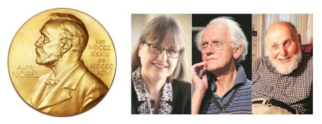

Nobel Prize science in use across New Zealand in Dodd-Walls Centre labs
The Dodd-Walls Centre is pleased to acknowledge the 2018 Nobel Prize winners in physics. The tools and techniques that they developed are used by Dodd-Walls Centre researchers in New Zealand on a daily basis. The prize winning tools are used in our labs across the country and contribute to new product development and services that we are working on to grow the New Zealand economy.

Our research centres around photonics, the manipulation of light at the most fundamental, quantum level, and the control and manipulation of matter at the atomic scale, through the use of light.
Dodd-Walls Interface Challenge: solving industry problems with innovative solutions | Dodd-Walls Centre Investigator - Dr Frederique Vanholsbeeck |
Find out more at https://bit.ly/2rRrxHP |